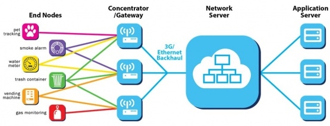
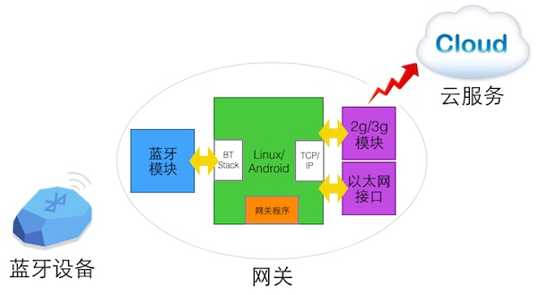

房东买了一个蓝牙门锁，新的租客来了，房东人在外地，怎么给租客开门？
商场里面的iBeacon设备，广播包中携带着温湿度监测数据，如何让管理员上网查看？
对于已经发售的蓝牙产品，如果出现Bug，厂商如何对其升级维护？
如果能够让蓝牙设备连上互联网，这一切都会变得简单。
网关在物联网时代会扮演重要的角色，它将成为连接物联网与互联网的纽带。它在使用不同的通信协议、数据格式，甚至体系结构之间起到翻译作用。
JUMA推出的蓝牙网关具有以下拓扑结构：
从硬件上说，网关具有蓝牙4.0通信模块，2G/3G或者以太网模块。从软件上来说，网关搭载着Linux/Android操作系统，支持蓝牙4.0协议栈、TCP/IP协议栈。网关上运行的程序具有数据解析、数据中转、设备监控、设备升级维护等功能。
从部署角度来说，一般一个场景中放置一个网关，它会连接周围的蓝牙设备，管理员也可以通过配置选择与其连接的蓝牙设备。如果需要连接的设备超出了网关蓝牙信号以外，则可以通过中继器，或者建立蓝牙自组网(Mesh)等方式扩大网络的通信范围。
请发邮件至hello@jumacc.com，客服人员会和您联系。